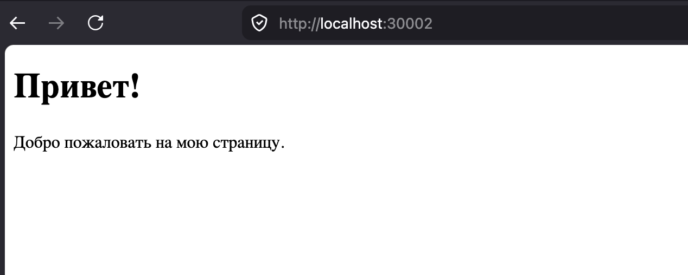

Задание 3 - Раздача HTML-страницы по HTTP¶
Задача¶
Реализовать серверную часть приложения. Клиент подключается к серверу и в ответ
получает HTTP-сообщение, содержащее HTML-страницу, которую сервер подгружает
из файла index.html.
Требования:
- обязательно использовать библиотеку
socket.
Теория¶
HTTP работает поверх TCP и представляет собой текстовый протокол. Ответ сервера состоит из:
- стартовой строки — версия протокола, код и текст статуса (
HTTP/1.1 200 OK); - заголовков — например,
Content-Type(тип содержимого) иContent-Length(длина тела в байтах); - пустой строки (
\r\n), отделяющей заголовки от тела; - тела — в данном случае содержимого HTML-файла.
Сервер читает index.html, формирует заголовки, отправляет ответ одним сообщением
и закрывает соединение. Поскольку ответ — корректное HTTP-сообщение, страницу
можно открыть не только клиентским скриптом, но и в браузере.
Код сервера¶
import socket
server = socket.socket(socket.AF_INET, socket.SOCK_STREAM)
server.bind(('localhost', 30_002))
server.listen()
while True:
socket_for_client, addr = server.accept()
with open('index.html', 'r') as file:
html = file.read().encode('utf-8')
headers = "HTTP/1.1 200 OK\r\n" \
"Content-Type: text/html\r\n" \
f"Content-Length: {len(html)}\r\n" \
"\r\n".encode('utf-8')
socket_for_client.send(headers + html)
socket_for_client.close()
HTML-страница¶
<!DOCTYPE html>
<html lang="ru">
<head>
<meta charset="UTF-8">
<title>Приветствие</title>
</head>
<body>
<h1>Привет!</h1>
<p>Добро пожаловать на мою страницу.</p>
</body>
</html>
Код клиента¶
import socket
client = socket.socket(socket.AF_INET, socket.SOCK_STREAM)
client.connect(('localhost', 30_002))
print(client.recv(1024).decode('utf-8'))
client.close()
Запуск¶
Из папки task3 (сервер открывает index.html по относительному пути):
python3 server.py
Затем в другом терминале:
python3 client.py
или открыть в браузере адрес http://localhost:30002.
Пример¶
